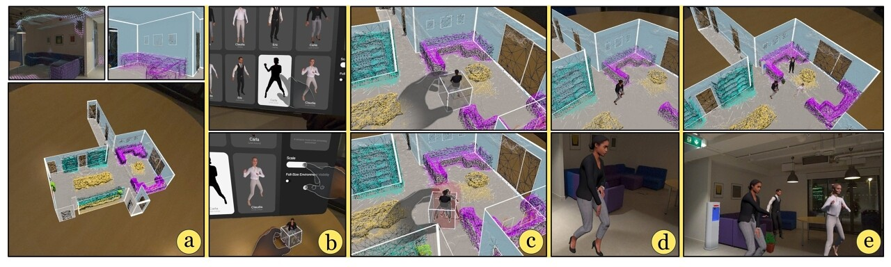

|
Xuyu Li I am a PhD student in the School of Computer Science and Statistics at Trinity College Dublin, where I am supervised by Dr. John Dingliana. |

|
Research* indicate an equal contribution. |
|
 |
Tangible Immersive Authoring of Dynamic Mixed Reality
Scenes with the World in Miniature Paradigm
Xuyu Li, John Dingliana. SIGGRAPH Asia 2025 Posters We present work-in-progress on the development of a framework for immersive authoring of dynamic Mixed Reality scenes, employing the World-in-Miniature technique to reduce workload, using a tangible user interface for intuitive object placement, and incorporating spatio-temporal bounding volumes to avoid clipping with dynamic content. We developed a prototype on the Meta Quest 3 using its Passthrough camera access, and present the design and implementation details for such a system, along with insights that motivate promising directions for future work. |

|
The design and evaluation of a tangible interface for
cutaway visualization in mixed reality
Xuyu Li, Priyansh Jalan, John Dingliana. Computers & Graphics In this article, we report on research exploring tangible interfaces for authoring cutaway visualizations in Mixed Reality (MR). The proposed approach is to allow users to create the outline of a virtual cutaway section by physically tracing their fingers directly on the surface of a real object, to reveal virtual information within. Building on a prototype of such system, developed for the Microsoft HoloLens 2, we conducted user studies to compare the performance and feedback of participants using a tangible system in contrast to the completion of analogous tasks using conventional mid-air gestures. The experiments revealed that the tangible interface supported more accurate tracing, and participants consistently rated it as more intuitive and effective. These findings highlight the promise of tangible approaches and provide compelling direction for future work. |
|
|
A Tangible Interface for Creating Virtual Cutaways in
Mixed Reality
Xuyu Li, Priyansh Jalan, John Dingliana. EuroXR 2024 In this paper, we discuss work-in-progress research on tangible interfaces for interactive cutaway visualizations in Mixed Reality (MR). We present an approach that allows users to flexibly and intuitively define virtual cutaway geometry by directly interacting with real-world objects. Using hand movements the user physically traces the shape of the cutaway on an object, without the need for specialized input devices. Tangible interaction allows more accurate interaction and makes it easier for users to plan the placement and shape of required cutaways that fit the object. We developed a prototype demonstrator on the Microsoft HoloLens 2 and present the design and implementation details for such a system and discuss insights, gained from preliminary testing, that motivate compelling directions for future work. |
|
|
Tangible Authoring of Embedded-Object Visualizations in
Mixed Reality
Xuyu Li, John Dingliana. VINCI '24 In this paper, we discuss work-in-progress research on using tangible interfaces for intuitively authoring and visualizing internal 3D structures in Mixed Reality (MR). Virtually embedding internal structures is an approach that is commonly used for explanatory and instructional visualizations in domains such as anatomy, engineering, and geosciences. However such embedded-object visualizations often suffer from spatial ambiguity, and can be difficult to create without technical proficiency with 3D modeling tools or graphical programming. To address these issues, we propose an approach that leverages tangible interaction in an immersive authoring system, where users curate a mixed-reality visualization from within the mixed reality experience itself. Tangible interaction, allowing the user to physically touch, hold, and feel physical elements of the MR interface, eases the modeling process and enhances the sense of the relative 3D spatial orientations and positions of objects manipulated by the user. Specifically, we provide an intuitive user interface for virtually embedding objects inside captured real-world objects, and customizing cutaways of the real object to reveal the underlying internal objects. |
|
|
Towards Optimizing Spatial Perception of Embedded-Object
Visualizations in Optical See-Through Mixed Reality
Priyansh Jalan, Xuyu Li, John Dingliana. SAP '24 In this poster, we present work-in-progress research towards improving the spatial perception of 3D objects on Optical See-through Mixed Reality displays, addressing, in particular, visualizations comprising virtual objects embedded inside physical real-world objects. This use-case is common in visualization applications in medicine, engineering and geosciences, but is an added challenge in mixed reality (MR), where multiple modalities of data (real and virtual objects) essentially occupy the same 3D space leading to inevitable depth ambiguity. In this poster, we review several strategies for ameliorating this problem, discuss insights from preliminary implementations of such approaches and propose avenues for future work. |
|
|
TangibleMRCreate: Intuitive Authoring of Mixed Reality
Content
Xuyu Li, John Dingliana. ICAT-EGVE2023 - Posters and Demos In this poster, we present work-in-progress exploring the intuitive authoring of Mixed Reality (MR) content using physical object manipulation, tangible 3D user interfaces, and the creation of MR within MR itself. To assess this approach, we implemented an MR-based system enabling novice users to tangibly create MR scenes within MR. The system, prototyped on the Microsoft HoloLens 2, allows users to create digital scenes by manipulating a physical box and a tangible 3D user interface. A pilot study was conducted to provide a preliminary evaluation and to inform future system development and deeper study design. |
|
|
Apriori algorithm for the data mining of global
cyberspace security issues for human participatory based on association
rules
Zhi Li, Xuyu Li, Runhua Tang, Lin Zhang. Frontiers in Psychology This study explored the global cyberspace security issues, with the purpose of breaking the stereotype of people’s cognition of cyberspace problems, which reflects the relationship between interdependence and association. Based on the Apriori algorithm in association rules, a total of 181 strong rules were mined from 40 target websites and 56,096 web pages were associated with global cyberspace security. Moreover, this study analyzed support, confidence, promotion, leverage, and reliability to achieve comprehensive coverage of data. A total of 15,661 sites mentioned cyberspace security-related words from the total sample of 22,493 professional websites, accounting for 69.6%, while only 735 sites mentioned cyberspace security-related words from the total sample of 33,603 non-professional sites, accounting for 2%. Due to restrictions of language, the number of samples of target professional websites and non-target websites is limited. Meanwhile, the number of selections of strong rules is not satisfactory. Nowadays, the cores of global cyberspace security issues include internet sovereignty, cyberspace security, cyber attack, cyber crime, data leakage, and data protection. |
{kind=link}
What's More?
|